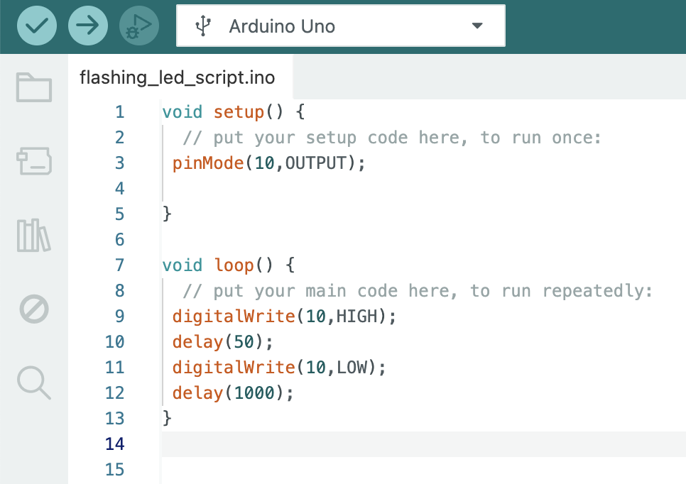

<!DOCTYPE html>
<html lang="en">
<head>
    <meta charset="UTF-8">
    <meta name="viewport" content="width=device-width, initial-scale=1.0">
    <title>Document</title>
</head>
<body>
    
</body>
</html>
<h5> <a href="../projects.html"> <u> <em> Back </em> </u> </a> </h5>
<h1>Flashing LED</h1>
<p>
    This project is a simple introduction to using an Arduino to control electronic components. 
    By connecting a single LED to a digital pin and using basic timing functions in the code, the Arduino repeatedly turns the LED on and off. 
    It's a great starting point for learning how microcontrollers handle digital outputs and how code interacts with physical hardware.
</p>
<p>
    A simple circuit was created using a 220Ω resistor, an LED, and a few wires, 
    then programmed with basic Arduino functions like digitalWrite and delay().
</p>


<video src="../../../videos/FlashingLED.mp4" height="400" controls autoplay muted loop> </video>


